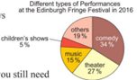
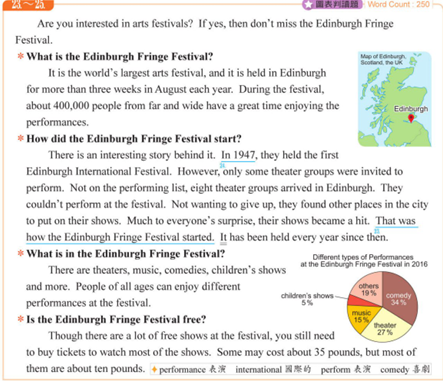
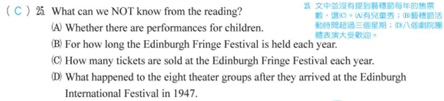

分享原題｜第25題
完整原題
作答所需文章／材料
Are you interested in arts festivals? If yes, then don’t miss the Edinburgh Fringe Festival. What is the Edinburgh Fringe Festival? It is the world’s largest arts festival, and it is held in Edinburgh for more than three weeks in August each year. During the festival, about 400,000 people from far and wide have a great time enjoying the performances. How did the Edinburgh Fringe Festival start? There is an interesting story behind it. In 1947, they held the first Edinburgh International Festival. However, only some theater groups were invited to perform. Not on the performing list, eight theater groups arrived in Edinburgh. They couldn’t perform at the festival. Not wanting to give up, they found other places in the city to put on their shows. Much to everyone’s surprise, their shows became a hit. That was how the Edinburgh Fringe Festival started. It has been held every year since then. What is in the Edinburgh Fringe Festival? There are theaters, music, comedies, children’s shows and more. People of all ages can enjoy different performances at the festival. Is the Edinburgh Fringe Festival free? Though there are a lot of free shows at the festival, you still need to buy tickets to watch most of the shows. Some may cost about 35 pounds, but most of them are about ten pounds. 原卷字詞：performance表演；international國際的；perform表演；comedy喜劇。| 表演類型 | 比例 |
|---|---|
| comedy（喜劇） | 34% |
| theater（戲劇） | 27% |
| music（音樂） | 15% |
| children’s shows（兒童表演） | 5% |
| others（其他） | 19% |

先想一想，再查看答案、解說與原圖
逐項解析
| 選項與原句 | 判讀 | 句意與判斷理由 |
|---|---|---|
| (A) Whether there are performances for children. | 不選 | 文章及圖表明示有兒童表演，能得知。 |
| (B) For how long the Edinburgh Fringe Festival is held each year. | 不選 | 每年持續超過三週，第一段有明確答案；不問創辦至今年數。 |
| (C) How many tickets are sold at the Edinburgh Fringe Festival each year. | 應選 | 全文無每年售票張數，人數/票價/表演比例不能推出票數。 |
| (D) What happened to the eight theater groups after they arrived at the Edinburgh International Festival in 1947. | 不選 | 第二部分交代八劇團另覓場地演出並大受歡迎，能得知。 |
詳細說明與解題步驟
全文逐句翻譯
你對藝術節有興趣嗎？如果有，就別錯過愛丁堡藝穗節。
「什麼是愛丁堡藝穗節？」它是世界上最大的藝術節，每年八月在愛丁堡舉辦，持續超過三週。藝術節期間，約四十萬名來自各地的人們愉快地欣賞表演。
「愛丁堡藝穗節如何開始？」它背後有個有趣的故事。1947年，第一屆愛丁堡國際藝術節舉行。然而，只有部分劇團受邀演出。八個不在演出名單上的劇團抵達愛丁堡。他們無法在該藝術節表演。他們不願放棄，在市內另找地方演出。令大家驚訝的是，他們的演出大受歡迎。愛丁堡藝穗節就是這樣開始的。自此以後，它每年舉辦。
「藝穗節有哪些內容？」有戲劇、音樂、喜劇、兒童表演等。各年齡層的人都能欣賞不同的表演。
「藝穗節免費嗎？」雖然有許多免費表演，但大多數表演仍須買票。有些票價約35英鎊，大部分約10英鎊。
附圖地圖標示愛丁堡位於英國蘇格蘭；2016年表演類型比例為喜劇34%、戲劇27%、音樂15%、兒童表演5%、其他19%。
詳解
題目問無法得知什麼，先圈NOT。文章沒有告訴我們每年賣出幾張票，所以選C。
A問是否有兒童表演，第三部分明列children’s shows，圖表也有5%，可知。B的For how long…each year問每年持續多久，第一部分明寫超過三週；不是從創辦至今共多少年。D問八劇團後續，第二部分交代未能在原藝術節演出，便另找場地並大受歡迎，也可知。
數字要連同單位與對象判讀。400,000是人數，不是票數；35與10是英鎊票價，不是張數；圖表是表演類型百分比，不是售票總量。文中還有免費表演，不能假設每人必買一張票。
快速判斷：問票數須找幾張；人數、金額、比例都不能直接代替。文章的歷史及數據按原卷保留，這是在依本文作答，不當作現今活動資訊。
A、B、D：本文有明確線索
↓ 各有原文證據
① 先圈NOT，逐項找原文線索
問題問「無法得知」。A、B、D都能找到原文根據，先把這三項排除。
先分類，再對照題目問什麼
↓ 依對象與單位分類
② 讀數字時，連同對象與單位
原文的人數、票價與圓餅圖比例，分別在描述不同資訊。
檢查售票總量的資料
↓ 核對本文是否提供
2016年的圓餅圖描述表演類型，不是售票張數分布。
③ C要的是幾張票，本文沒有提供
文中還有免費表演；沒有每人買幾張票等資料，不能把40萬人直接換成40萬張票。
④ 把文章資訊與問題的單位對上
答案 C：無法得知每年售票張數
- A兒童、B每年超過三週、D八劇團後續都有線索。
- 400,000人是人數；10或35英鎊是票價。
- 表演比例不等於售票總量，缺的數據不猜補。
核對註記：已實看原始上傳題本及裁圖，核對題幹、四選項、必要文章/圖表；依使用者在原對話明示的錯題與訂正收錄，不將題本印刷答案冒充學生筆跡。日期採原始出題訊息的台灣日期，未提供實際考試日。
原圖（僅本題）

